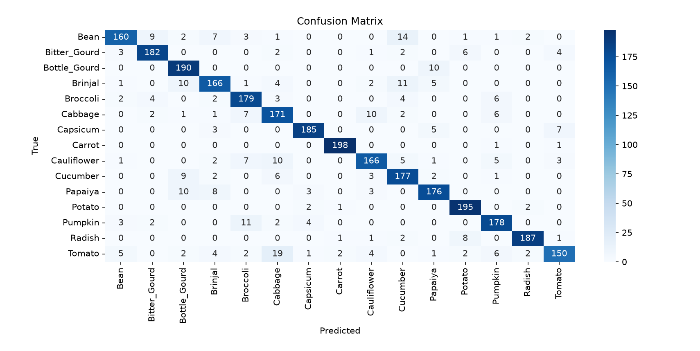
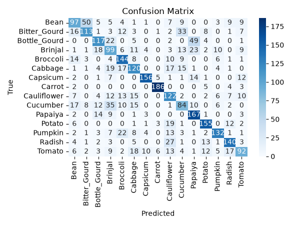
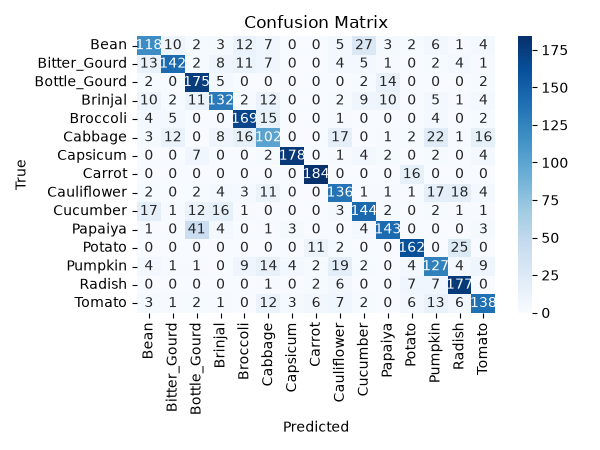

今回の取り組みでは、画像認識を目的としてCNNおよびVLMの モデル学習・検証を行いました。
主な成果物は以下の2点です。
また、学習したモデルを実際のアプリケーション上で利用し、 CNNとVLMを組み合わせた画像認識処理を検証しました。
そのため、本ドキュメントではアプリケーションの実装そのものよりも、 「なぜこのモデルを選択したのか」「どのように学習したのか」「学習によってどのような結果が得られたのか」「どの構成で推論できたのか」といったモデル学習・検証を中心に記載します。
検証モデル：ResNet, VGG
学習条件
画像枚数 : 学習画像:750枚, 検証画像 750枚
画像サイズ : 224x224
EPOCH : 100
テスト条件
画像サイズ : 224x224
画像枚数 : 3000枚(1クラス200枚ずつ)
モデル名：ResNet18
| Class | precision | recall | f1-score |
|---|---|---|---|
| Bean | 0.91 | 0.80 | 0.85 |
| Bitter_Gourd | 0.91 | 0.91 | 0.91 |
| Bottle_Gourd | 0.85 | 0.95 | 0.90 |
| Brinjal | 0.85 | 0.83 | 0.84 |
| Broccoli | 0.85 | 0.90 | 0.87 |
| Cabbage | 0.78 | 0.85 | 0.82 |
| Capsicum | 0.95 | 0.93 | 0.94 |
| Carrot | 0.98 | 0.99 | 0.99 |
| Cauliflower | 0.87 | 0.83 | 0.85 |
| Cucumber | 0.82 | 0.89 | 0.85 |
| Papaiya | 0.88 | 0.88 | 0.88 |
| Potato | 0.92 | 0.97 | 0.95 |
| Pumpkin | 0.87 | 0.89 | 0.88 |
| Radish | 0.97 | 0.94 | 0.95 |
| Tomato | 0.90 | 0.75 | 0.82 |
| accuracy | 0.89 |

モデル名：ResNet101
| Class | precision | recall | f1-score |
|---|---|---|---|
| Bean | 0.55 | 0.48 | 0.51 |
| Bitter_Gourd | 0.63 | 0.56 | 0.59 |
| Bottle_Gourd | 0.64 | 0.58 | 0.61 |
| Brinjal | 0.42 | 0.49 | 0.46 |
| Broccoli | 0.63 | 0.72 | 0.67 |
| Cabbage | 0.57 | 0.60 | 0.58 |
| Capsicum | 0.87 | 0.78 | 0.82 |
| Carrot | 0.93 | 0.93 | 0.93 |
| Cauliflower | 0.51 | 0.61 | 0.56 |
| Cucumber | 0.48 | 0.42 | 0.45 |
| Papaiya | 0.63 | 0.83 | 0.72 |
| Potato | 0.76 | 0.78 | 0.77 |
| Pumpkin | 0.76 | 0.66 | 0.71 |
| Radish | 0.72 | 0.70 | 0.71 |
| Tomato | 0.60 | 0.46 | 0.52 |
| accuracy | 0.64 |

モデル名：VGG11
| Class | precision | recall | f1-score |
|---|---|---|---|
| Bean | 0.55 | 0.59 | 0.56 |
| Bitter_Gourd | 0.75 | 0.79 | 0.77 |
| Bottle_Gourd | 0.69 | 0.79 | 0.74 |
| Brinjal | 0.74 | 0.64 | 0.68 |
| Broccoli | 0.69 | 0.80 | 0.74 |
| Cabbage | 0.79 | 0.54 | 0.64 |
| Capsicum | 0.91 | 0.81 | 0.86 |
| Carrot | 0.88 | 0.91 | 0.89 |
| Cauliflower | 0.78 | 0.59 | 0.67 |
| Cucumber | 0.67 | 0.68 | 0.67 |
| Papaiya | 0.80 | 0.67 | 0.73 |
| Potato | 0.92 | 0.97 | 0.95 |
| Pumpkin | 0.68 | 0.67 | 0.68 |
| Radish | 0.75 | 0.80 | 0.77 |
| Tomato | 0.69 | 0.65 | 0.67 |
| accuracy | 0.72 |
モデル名：VGG19
| Class | precision | recall | f1-score |
|---|---|---|---|
| Bean | 0.67 | 0.59 | 0.63 |
| Bitter_Gourd | 0.82 | 0.71 | 0.76 |
| Bottle_Gourd | 0.69 | 0.88 | 0.77 |
| Brinjal | 0.73 | 0.66 | 0.69 |
| Broccoli | 0.76 | 0.84 | 0.80 |
| Cabbage | 0.55 | 0.51 | 0.53 |
| Capsicum | 0.95 | 0.89 | 0.92 |
| Carrot | 0.90 | 0.92 | 0.91 |
| Cauliflower | 0.67 | 0.68 | 0.67 |
| Cucumber | 0.72 | 0.72 | 0.72 |
| Papaiya | 0.81 | 0.71 | 0.76 |
| Potato | 0.81 | 0.81 | 0.81 |
| Pumpkin | 0.61 | 0.64 | 0.62 |
| Radish | 0.74 | 0.89 | 0.81 |
| Tomato | 0.73 | 0.69 | 0.71 |
| accuracy | 0.74 |

ResNet：特徴抽出前の入力特徴量を後段へ直接伝える残差接続を持つ。残差ブロックではConvやNormなどの処理によって入力特徴量に対する「変化量（残差）」を学習し、元の入力特徴量と足し合わせる。 この構造により、深いネットワークでも勾配が入力側へ伝播（誤差を小さくするために、各層の重みをどの方向・どの程度変更すべきかという情報（勾配）が、出力側から入力側の各層へ伝わっていくこと）しやすくなり、学習を安定させやすい。極端に言えば、各層で特徴量を一から大きく変化させるのではなく、「元の特徴量から何をどの程度変化させればよいか」を学習できるため、深いネットワークの最適化がしやすくなる。
VGG：ConvやNorm、活性化関数などの一般的なCNNの処理を多数積み重ねる構成。層を深くすることでより複雑な特徴を抽出できる一方、深くなるほど学習条件の調整や計算コストが大きくなる。 特にVGGはパラメータ数が多く、モデルサイズや学習・推論時の計算コストが大きくなりやすい。そのため、データセットの質や学習率、エポック数などの条件を適切に調整する必要があり、将来的にクラス数やデータ量が増えた場合の計算コストも考慮する必要がある。
ResNetとVGGを比較すると、「層数が多い＝必ず高性能」というわけではないことが分かる。
ResNetは残差接続によって、元の特徴量を直接伝播させながら必要な変化量を学習できるため、深いネットワークでも勾配を伝播させやすく、学習を安定させやすい。そのため、VGGより層数が少ないResNetでも、十分に高い画像認識性能を得られる場合がある。
これは「ResNetの方が少ない層で深く学習できる」というより、残差接続によって深いネットワークを効率的に最適化できるため、層数だけではモデルの性能を判断できないという点が重要である。
また、それぞれのモデルにはさらに深い構成も存在するが、現在のデータセットは15クラスであり、現状では過度に高い表現力を持つモデルを使用しなくても画像分類が可能である。そのため、現時点では精度だけでなく、学習時間・推論時間・モデルサイズ・VRAM使用量なども考慮してモデルを選定する。
将来的にクラス数やデータ量が増加し、より複雑な特徴の識別が必要になった場合には、ResNet101などのより深いモデルを含めて再評価し、必要な表現力と計算コストのバランスを考慮してモデルを変更することを想定する。
検証モデル：Qwen3-VL-2B-Instruct, Qwen2.5-VL-3B-Instruct
画像枚数 : 学習データ:3000枚(特徴データ1500枚, 特徴なしデータ1500枚), 検証画像 160枚
画像サイズ : 224x224
EPOCH : 10
対象クラス（入力プロンプト例）
{
"question":
"この写真の野菜は？
# 判定ルール
- 画像が【対象クラス（野菜・果物）】である場合：後述の「JSONフォーマット」に従い特徴を出力すること
- 画像が【対象クラス外】である場合：テキストで「クラス対象外」とだけ出力すること
# 制約
- 判定ルール以外の余計な前置きや後置きのテキストは一切出力しないこと
- 対象クラスの場合、必ず指定されたJSON構造を守り、余計な説明文章を出力しないこと
# 出力フォーマット
{
"color_main": "主となる色（例：濃い緑、朱赤）",
"color_sub_pattern": "サブの色・グラデーション・模様（例：白の縦縞、斑点）",
"shape_geometry": "全体的な幾何学的形状（例：球形、円柱形）",
"shape_aspect_ratio": "アスペクト比・サイズ感・対称性（例：縦長 1:4）",
"texture_surface": "表面の質感・光沢（例：ツヤあり、マット、ザラザラ）",
"texture_structure": "表面の構造・凹凸・溝（例：イボあり、網目模様）",
"anatomical_junction": "ヘタ・茎・根などの接合部（例：星型のヘタ、切り口）",
"anatomical_cross_section": "断面・内部構造・葉の特徴（例：中心の種子配置、重なり）"
}",
"image": "<image_path>",
"answer":
{
"color_main": "くすんだ緑色",
"color_sub_pattern": "縁に暗い紫色のストライプ状の色彩",
"shape_geometry": "弓形の扁平体",
"shape_aspect_ratio": "縦長（長径が短径の約3.5倍）、曲面非対称",
"texture_surface": "ツヤがなく、やや粗い質感",
"texture_structure": "外周を囲む隆起した筋構造と微小なシワ",
"anatomical_junction": "先端（上部）が細くフック状に尖り、基部（下部）に梗の残り",
"anatomical_cross_section": "切断なし（一連のサヤとして閉じられた解剖学的構造）"
}
}
想定出力例
{'color_main': '淡い緑色', 'color_sub_pattern': '緑色の縦縞と白い部分のコントラスト', 'shape_geometry': '丸みのある球形', 'shape_aspect_ratio': '縦長（アスペクト比 1:2.5）、丸みのある形状', 'texture_surface': 'ツヤがあり、滑らかな質感', 'texture_structure': '微細な凹凸構造（縦縞）', 'anatomical_junction': '未露出の果柄（左側に小さな穴状の切れ目）', 'anatomical_cross_section': '未開果（カットされていない）'}
対象外クラス（入力プロンプト例）
{
"question": "
この写真の野菜は？
# 判定ルール
- 画像が【対象クラス（野菜・果物）】である場合：後述の「JSONフォーマット」に従い特徴を出力すること
- 画像が【対象クラス外】である場合：テキストで「クラス対象外」とだけ出力すること
# 制約
- 判定ルール以外の余計な前置きや後置きのテキストは一切出力しないこと
- 対象クラスの場合、必ず指定されたJSON構造を守り、余計な説明文章を出力しないこと
# 出力フォーマット
{
"color_main": "主となる色（例：濃い緑、朱赤）",
"color_sub_pattern": "サブの色・グラデーション・模様（例：白の縦縞、斑点）",
"shape_geometry": "全体的な幾何学的形状（例：球形、円柱形）",
"shape_aspect_ratio": "アスペクト比・サイズ感・対称性（例：縦長 1:4）",
"texture_surface": "表面の質感・光沢（例：ツヤあり、マット、ザラザラ）",
"texture_structure": "表面の構造・凹凸・溝（例：イボあり、網目模様）",
"anatomical_junction": "ヘタ・茎・根などの接合部（例：星型のヘタ、切り口）",
"anatomical_cross_section": "断面・内部構造・葉の特徴（例：中心の種子配置、重なり）"
}",
"image": "<image_path>",
"answer": "クラス対象外です。"
}
想定出力例
クラス対象外です。
対象クラスを認識し特徴抽出するもしくは対象外クラスの出力
クラス対象外を認識させること
VLMの特徴は画像に映っている情報を分析して自然言語で出力することに特化していることから画像に映っている特徴を分析し情報の抽出をするための役割とした。CNNの出力結果とVLMの出力結果を合わせてクラスの検証を行うためにはCNNが学習をしていないクラスの認識をVLMにも判断してもらうためにクラス対象外の出力をするために再学習が必要だった。
LoRA学習時の量子化の有無、Merge後の推論、およびGGUF変換後の推論について検証した。
| 構成 | 推論結果 |
|---|---|
| FP16 LoRA | ○ |
| FP4 LoRA | ○ |
| FP16 LoRA → FP16 Merge | ○ |
| FP4 LoRA → FP16 Merge | ○ |
| FP16 LoRA → FP16 Merge → FP4 GGUF | × |
| FP4 LoRA → FP16 Merge → FP4 GGUF | × |
| FP16 LoRA → FP16 Merge → FP5 GGUF | × |
| FP4 LoRA → FP16 Merge → FP5 GGUF | × |
Qwen3-VL-2B-Instructは、VLM特有のモデル構造によりLoRA学習後のGGUF変換に関する問題が報告されており、今回の目的である「LoRA学習したVLMをGGUFへ変換して推論する」という検証を安定して行うことが難しいと判断した。
一方、Qwen2.5-VL-3B-Instructでは、FP16・FP4のいずれでもLoRA学習およびMerge後の推論まで正常に実行できたため、少なくともLoRA学習とMergeの検証対象としては利用可能であることを確認できた。
しかし、FP4およびFP5のGGUFへ変換した場合は、LoRA学習時の精度にかかわらず推論が正常に行えなかった。そのため、今回の検証では「LoRA学習 → Merge」までは正常に動作するものの、「Merge → GGUF → 推論」の段階で問題が発生するという結果が得られた。
以上から、今回のモデル比較では、Qwen2.5-VL-3B-Instructの方がLoRA学習からMergeまでの検証を進めやすく、今回の目的に適したモデルであると判断した。一方、GGUF化については問題が残っており、今後はGGUF変換処理、量子化方式に切り分け検証する必要がある。